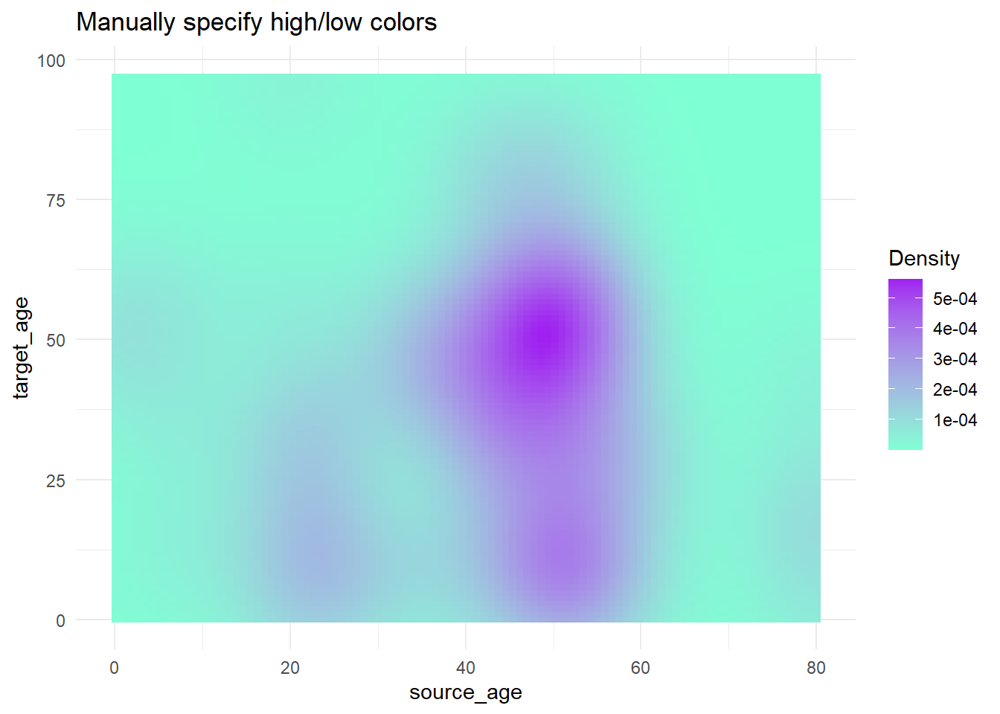
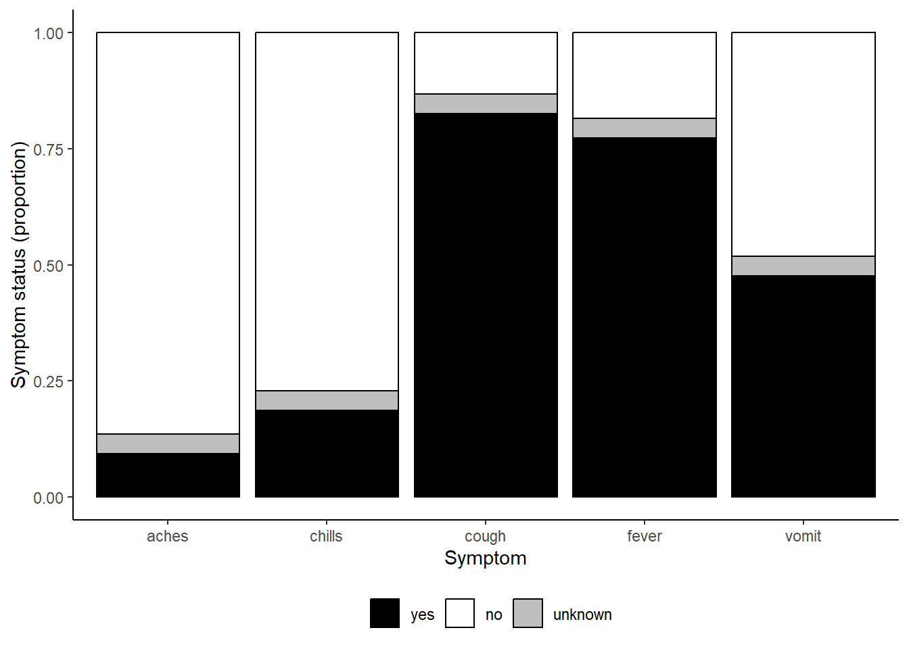
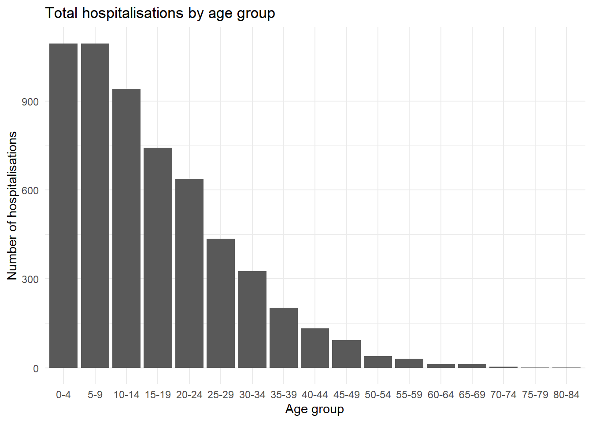
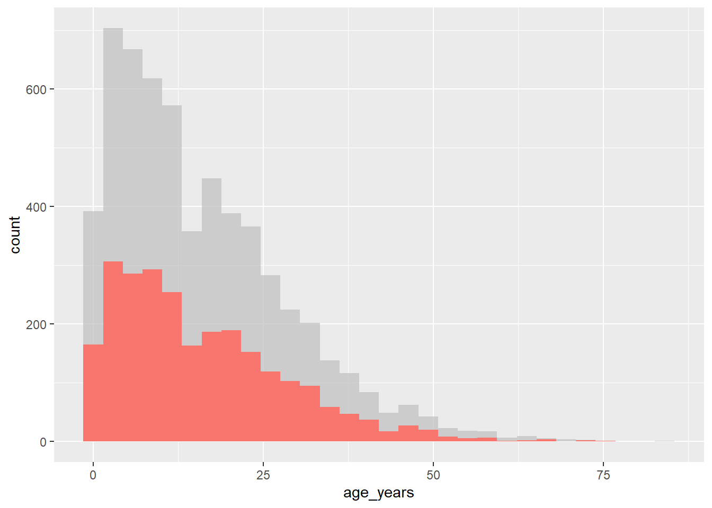
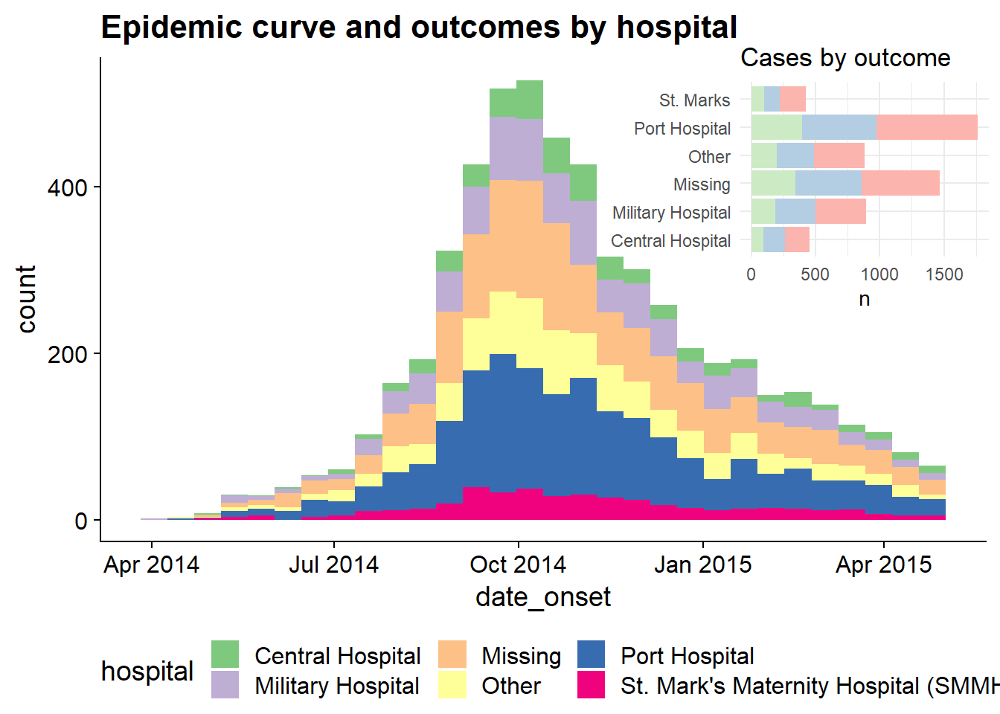

Themes and Specialized Plots
Extended Materials
ggplot2 is the most popular data visualisation R package. Its ggplot() function is at the core of this package, and this whole approach is colloquially known as “ggplot” with the resulting figures sometimes affectionately called “ggplots”. The “gg” in these names reflects the “grammar of graphics” used to construct the figures. ggplot2 benefits from a wide variety of supplementary R packages that further enhance its functionality.
The data visualization with ggplot cheatsheet from the RStudio website is a great reference to have on-hand when creating pltos. If you want inspiration for ways to creatively visualise your data, we suggest reviewing websites like the R graph gallery and Data-to-viz.
::: {.callout-note appearance=“minimal” collapse=“true”} ## Data Preparation
Data import and cleaning
We’ll import and clean the data identically to the previous chapter.
linelist <- rio::import("data/case_linelists/linelist_cleaned.rds")
# make display version of columns with more friendly names
linelist <- linelist %>%
mutate(
gender_disp = case_when(gender == "m" ~ "Male", # m to Male
gender == "f" ~ "Female", # f to Female,
is.na(gender) ~ "Unknown"), # NA to Unknown
outcome_disp = replace_na(outcome, "Unknown") # replace NA outcome with "unknown"
)
symptoms_data <- linelist %>%
select(c(case_id, fever, chills, cough, aches, vomit))
symptoms_data_long <- symptoms_data %>% # begin with "mini" linelist called symptoms_data
pivot_longer(
cols = -case_id, # pivot all columns except case_id (all the symptoms columns)
names_to = "symptom_name", # assign name for new column that holds the symptoms
values_to = "symptom_is_present") %>% # assign name for new column that holds the values (yes/no)
mutate(symptom_is_present = replace_na(symptom_is_present, "unknown")) # convert NA to "unknown"Themes
One of the best parts of ggplot2 is the amount of control you have over the plot - you can define anything! As mentioned above, the design of the plot that is not related to the data shapes/geometries are adjusted within the theme() function. For example, the plot background color, presence/absence of gridlines, and the font/size/color/alignment of text (titles, subtitles, captions, axis text…). These adjustments can be done in one of two ways:
- Add a complete theme
theme_()function to make sweeping adjustments - these includetheme_classic(),theme_minimal(),theme_dark(),theme_light()theme_grey(),theme_bw()among others
- Adjust each tiny aspect of the plot individually within
theme()
Complete themes
As they are quite straight-forward, we will demonstrate the complete theme functions below and will not describe them further here. Note that any micro-adjustments with theme() should be made after use of a complete theme.
Write them with empty parentheses.
ggplot(data = linelist, mapping = aes(x = age, y = wt_kg))+
geom_point(color = "darkgreen", size = 0.5, alpha = 0.2)+
labs(title = "Theme classic")+
theme_classic()
ggplot(data = linelist, mapping = aes(x = age, y = wt_kg))+
geom_point(color = "darkgreen", size = 0.5, alpha = 0.2)+
labs(title = "Theme bw")+
theme_bw()
ggplot(data = linelist, mapping = aes(x = age, y = wt_kg))+
geom_point(color = "darkgreen", size = 0.5, alpha = 0.2)+
labs(title = "Theme minimal")+
theme_minimal()
ggplot(data = linelist, mapping = aes(x = age, y = wt_kg))+
geom_point(color = "darkgreen", size = 0.5, alpha = 0.2)+
labs(title = "Theme gray")+
theme_gray()


Modify theme
The theme() function can take a large number of arguments, each of which edits a very specific aspect of the plot. There is no way we could cover all of the arguments, but we will describe the general pattern for them and show you how to find the argument name that you need. The basic syntax is this:
- Within
theme()write the argument name for the plot element you want to edit, likeplot.title =
- Provide an
element_()function to the argument
- Most often, use
element_text(), but others includeelement_rect()for canvas background colors, orelement_blank()to remove plot elements
- Within the
element_()function, write argument assignments to make the fine adjustments you desire
So, that description was quite abstract, so here are some examples.
The below plot looks quite silly, but it serves to show you a variety of the ways you can adjust your plot.
- We begin with the plot
age_by_wtdefined just above and addtheme_classic()
- For finer adjustments we add
theme()and include one argument for each plot element to adjust
It can be nice to organize the arguments in logical sections. To describe just some of those used below:
legend.position =is unique in that it accepts simple values like “bottom”, “top”, “left”, and “right”. But generally, text-related arguments require that you place the details withinelement_text().
- Title size with
element_text(size = 30)
- The caption horizontal alignment with
element_text(hjust = 0)(from right to left)
- The subtitle is italicized with
element_text(face = "italic")
age_by_wt +
theme_classic()+ # pre-defined theme adjustments
theme(
legend.position = "bottom", # move legend to bottom
plot.title = element_text(size = 30), # size of title to 30
plot.caption = element_text(hjust = 0), # left-align caption
plot.subtitle = element_text(face = "italic"), # italicize subtitle
axis.text.x = element_text(color = "red", size = 15, angle = 90), # adjusts only x-axis text
axis.text.y = element_text(size = 15), # adjusts only y-axis text
axis.title = element_text(size = 20) # adjusts both axes titles
) 
Here are some especially common theme() arguments. You will recognize some patterns, such as appending .x or .y to apply the change only to one axis.
theme() argument |
What it adjusts |
|---|---|
plot.title = element_text() |
The title |
plot.subtitle = element_text() |
The subtitle |
plot.caption = element_text() |
The caption (family, face, color, size, angle, vjust, hjust…) |
axis.title = element_text() |
Axis titles (both x and y) (size, face, angle, color…) |
axis.title.x = element_text() |
Axis title x-axis only (use .y for y-axis only) |
axis.text = element_text() |
Axis text (both x and y) |
axis.text.x = element_text() |
Axis text x-axis only (use .y for y-axis only) |
axis.ticks = element_blank() |
Remove axis ticks |
axis.line = element_line() |
Axis lines (colour, size, linetype: solid dashed dotted etc) |
strip.text = element_text() |
Facet strip text (colour, face, size, angle…) |
strip.background = element_rect() |
facet strip (fill, colour, size…) |
But there are so many theme arguments! How could I remember them all? Do not worry - it is impossible to remember them all. Luckily there are a few tools to help you:
The tidyverse documentation on modifying theme, which has a complete list.
Tip
Run theme_get() from ggplot2 to print a list of all 90+ theme() arguments to the console.
Tip
If you ever want to remove an element of a plot, you can also do it through theme(). Just pass element_blank() to an argument to have it disappear completely. For legends, set legend.position = "none".
Scales for color, fill, axes, etc.
In ggplot2, when aesthetics of plotted data (e.g. size, color, shape, fill, plot axis) are mapped to columns in the data, the exact display can be adjusted with the corresponding “scale” command. In this section we explain some common scale adjustments.
Color schemes
One thing that can initially be difficult to understand with ggplot2 is control of color schemes. Note that this section discusses the color of plot objects (geoms/shapes) such as points, bars, lines, tiles, etc.
To control “color” of plot objects you will be adjusting either the color = aesthetic (the exterior color) or the fill = aesthetic (the interior color). One exception to this pattern is geom_point(), where you really only get to control color =, which controls the color of the point (interior and exterior).
When setting colour or fill you can use colour names recognized by R like "red" (see complete list or enter ?colors), or a specific hex colour such as "#ff0505".
# histogram -
ggplot(data = linelist, mapping = aes(x = age))+ # set data and axes
geom_histogram( # display histogram
binwidth = 7, # width of bins
color = "red", # bin line color
fill = "lightblue") # bin interior color (fill) 
Aesthetics such as fill = and color = can be defined either outside of a mapping = aes() statement or inside of one. If outside the aes(), the assigned value should be static (e.g. color = "blue") and will apply for all data plotted by the geom. If inside, the aesthetic should be mapped to a column, like color = hospital, and the expression will vary by the value for that row in the data. A few examples:
# Static color for points and for line
ggplot(data = linelist, mapping = aes(x = age, y = wt_kg))+
geom_point(color = "purple")+
geom_vline(xintercept = 50, color = "orange")+
labs(title = "Static color for points and line")
# Color mapped to continuous column
ggplot(data = linelist, mapping = aes(x = age, y = wt_kg))+
geom_point(mapping = aes(color = temp))+
labs(title = "Color mapped to continuous column")
# Color mapped to discrete column
ggplot(data = linelist, mapping = aes(x = age, y = wt_kg))+
geom_point(mapping = aes(color = gender))+
labs(title = "Color mapped to discrete column")
# bar plot, fill to discrete column, color to static value
ggplot(data = linelist, mapping = aes(x = hospital))+
geom_bar(mapping = aes(fill = gender), color = "yellow")+
labs(title = "Fill mapped to discrete column, static color")


Scales
Once you map a column to a plot aesthetic (e.g. x =, y =, fill =, color =…), your plot will gain a scale/legend. See above how the scale can be continuous, discrete, date, etc. values depending on the class of the assigned column. If you have multiple aesthetics mapped to columns, your plot will have multiple scales.
You can control the scales with the appropriate scales_() function. The scale functions of ggplot() have 3 parts that are written like this: scale_AESTHETIC_METHOD().
- The first part,
scale_(), is fixed.
- The second part, the AESTHETIC, should be the aesthetic that you want to adjust the scale for (
_fill_,_shape_,_color_,_size_,_alpha_…) - the options here also include_x_and_y_.
- The third part, the METHOD, will be either
_discrete(),continuous(),_date(),_gradient(), or_manual()depending on the class of the column and how you want to control it. There are others, but these are the most-often used.
Be sure that you use the correct function for the scale! Otherwise your scale command will not appear to change anything. If you have multiple scales, you may use multiple scale functions to adjust them! For example:
Scale arguments
Each kind of scale has its own arguments, though there is some overlap. Query the function like ?scale_color_discrete in the R console to see the function argument documentation.
For continuous scales, use breaks = to provide a sequence of values with seq() (take to =, from =, and by = as shown in the example below. Set expand = c(0,0) to eliminate padding space around the axes (this can be used on any _x_ or _y_ scale.
For discrete scales, you can adjust the order of level appearance with breaks =, and how the values display with the labels = argument. Provide a character vector to each of those (see example below). You can also drop NA easily by setting na.translate = FALSE.
Manual adjustments
One of the most useful tricks is using “manual” scaling functions to explicitly assign colors as you desire. These are functions with the syntax scale_xxx_manual() (e.g. scale_colour_manual() or scale_fill_manual()). Each of the below arguments are demonstrated in the code example below.
- Assign colors to data values with the
values =argument
- Specify a color for
NAwithna.value =
- Change how the values are written in the legend with the
labels =argument
- Change the legend title with
name =
Below, we create a bar plot and show how it appears by default, and then with three scales adjusted - the continuous y-axis scale, the discrete x-axis scale, and manual adjustment of the fill (interior bar color).
# BASELINE - no scale adjustment
ggplot(data = linelist)+
geom_bar(mapping = aes(x = outcome, fill = gender))+
labs(title = "Baseline - no scale adjustments")
# SCALES ADJUSTED
ggplot(data = linelist)+
geom_bar(mapping = aes(x = outcome, fill = gender), color = "black")+
theme_minimal()+ # simplify background
scale_y_continuous( # continuous scale for y-axis (counts)
expand = c(0,0), # no padding
breaks = seq(from = 0,
to = 3000,
by = 500))+
scale_x_discrete( # discrete scale for x-axis (gender)
expand = c(0,0), # no padding
drop = FALSE, # show all factor levels (even if not in data)
na.translate = FALSE, # remove NA outcomes from plot
labels = c("Died", "Recovered"))+ # Change display of values
scale_fill_manual( # Manually specify fill (bar interior color)
values = c("m" = "violetred", # reference values in data to assign colors
"f" = "aquamarine"),
labels = c("m" = "Male", # re-label the legend (use "=" assignment to avoid mistakes)
"f" = "Female",
"Missing"),
name = "Gender", # title of legend
na.value = "grey" # assign a color for missing values
)+
labs(title = "Adjustment of scales") # Adjust the title of the fill legend
Continuous axes scales
When data are mapping to the plot axes, these too can be adjusted with scales commands. A common example is adjusting the display of an axis (e.g. y-axis) that is mapped to a column with continuous data.
We may want to adjust the breaks or display of the values in the ggplot using scale_y_continuous(). As noted above, use the argument breaks = to provide a sequence of values that will serve as “breaks” along the scale. These are the values at which numbers will display. To this argument, you can provide a c() vector containing the desired break values, or you can provide a regular sequence of numbers using the base R function seq(). This seq() function accepts to =, from =, and by =.
# BASELINE - no scale adjustment
ggplot(data = linelist)+
geom_bar(mapping = aes(x = outcome, fill = gender))+
labs(title = "Baseline - no scale adjustments")
#
ggplot(data = linelist)+
geom_bar(mapping = aes(x = outcome, fill = gender))+
scale_y_continuous(
breaks = seq(
from = 0,
to = 3000,
by = 100)
)+
labs(title = "Adjusted y-axis breaks")

Display percents
If your original data values are proportions, you can easily display them as percents with “%” by providing labels = scales::percent in your scales command, as shown below.
While an alternative would be to convert the values to character and add a “%” character to the end, this approach will cause complications because your data will no longer be continuous numeric values.
# Original y-axis proportions
#############################
linelist %>% # start with linelist
group_by(hospital) %>% # group data by hospital
summarise( # create summary columns
n = n(), # total number of rows in group
deaths = sum(outcome == "Death", na.rm=T), # number of deaths in group
prop_death = deaths/n) %>% # proportion deaths in group
ggplot( # begin plotting
mapping = aes(
x = hospital,
y = prop_death))+
geom_col()+
theme_minimal()+
labs(title = "Display y-axis original proportions")
# Display y-axis proportions as percents
########################################
linelist %>%
group_by(hospital) %>%
summarise(
n = n(),
deaths = sum(outcome == "Death", na.rm=T),
prop_death = deaths/n) %>%
ggplot(
mapping = aes(
x = hospital,
y = prop_death))+
geom_col()+
theme_minimal()+
labs(title = "Display y-axis as percents (%)")+
scale_y_continuous(
labels = scales::percent # display proportions as percents
)

Log scale
To transform a continuous axis to log scale, add trans = "log2" to the scale command. For purposes of example, we create a data frame of regions with their respective preparedness_index and cumulative cases values.
plot_data <- data.frame(
region = c("A", "B", "C", "D", "E", "F", "G", "H", "I"),
preparedness_index = c(8.8, 7.5, 3.4, 3.6, 2.1, 7.9, 7.0, 5.6, 1.0),
cases_cumulative = c(15, 45, 80, 20, 21, 7, 51, 30, 1442)
)
plot_data region preparedness_index cases_cumulative
1 A 8.8 15
2 B 7.5 45
3 C 3.4 80
4 D 3.6 20
5 E 2.1 21
6 F 7.9 7
7 G 7.0 51
8 H 5.6 30
9 I 1.0 1442The cumulative cases for region “I” are dramatically greater than all the other regions. In circumstances like this, you may elect to display the y-axis using a log scale so the reader can see differences between the regions with fewer cumulative cases.
# Original y-axis
preparedness_plot <- ggplot(data = plot_data,
mapping = aes(
x = preparedness_index,
y = cases_cumulative))+
geom_point(size = 2)+ # points for each region
geom_text(
mapping = aes(label = region),
vjust = 1.5)+ # add text labels
theme_minimal()
preparedness_plot # print original plot
# print with y-axis transformed
preparedness_plot+ # begin with plot saved above
scale_y_continuous(trans = "log2") # add transformation for y-axis

Gradient scales
Fill gradient scales can involve additional nuance. The defaults are usually quite pleasing, but you may want to adjust the values, cutoffs, etc.
To demonstrate how to adjust a continuous color scale, we’ll use a data set that contains the ages of cases and of sources in a contact tracing case.
case_source_relationships <- rio::import("data/godata/relationships_clean.rds") %>%
select(source_age, target_age) Below, we produce a “raster” heat tile density plot. Note how the fill scale is continuous.
trans_matrix <- ggplot(
data = case_source_relationships,
mapping = aes(x = source_age, y = target_age))+
stat_density2d(
geom = "raster",
mapping = aes(fill = after_stat(density)),
contour = FALSE)+
theme_minimal()Now we show some variations on the fill scale:
trans_matrix
trans_matrix + scale_fill_viridis_c(option = "plasma")

Now we show some examples of actually adjusting the break points of the scale:
scale_fill_gradient()accepts two colors (high/low)
scale_fill_gradientn()accepts a vector of any length of colors tovalues =(intermediate values will be interpolated)
- Use
scales::rescale()to adjust how colors are positioned along the gradient; it rescales your vector of positions to be between 0 and 1.
trans_matrix +
scale_fill_gradient( # 2-sided gradient scale
low = "aquamarine", # low value
high = "purple", # high value
na.value = "grey", # value for NA
name = "Density")+ # Legend title
labs(title = "Manually specify high/low colors")
# 3+ colors to scale
trans_matrix +
scale_fill_gradientn( # 3-color scale (low/mid/high)
colors = c("blue", "yellow","red") # provide colors in vector
)+
labs(title = "3-color scale")
# Use of rescale() to adjust placement of colors along scale
trans_matrix +
scale_fill_gradientn( # provide any number of colors
colors = c("blue", "yellow","red", "black"),
values = scales::rescale(c(0, 0.05, 0.07, 0.10, 0.15, 0.20, 0.3, 0.5)) # positions for colors are rescaled between 0 and 1
)+
labs(title = "Colors not evenly positioned")
# use of limits to cut-off values that get fill color
trans_matrix +
scale_fill_gradientn(
colors = c("blue", "yellow","red"),
limits = c(0, 0.0002))+
labs(title = "Restrict value limits, resulting in grey space")


Palettes
Colorbrewer and Viridis
More generally, if you want predefined palettes, you can use the scale_xxx_brewer or scale_xxx_viridis_y functions.
The ‘brewer’ functions can draw from colorbrewer.org palettes.
The ‘viridis’ functions draw from viridis (colourblind friendly!) palettes, which “provide colour maps that are perceptually uniform in both colour and black-and-white. They are also designed to be perceived by viewers with common forms of colour blindness.” (read more here and here). Define if the palette is discrete, continuous, or binned by specifying this at the end of the function (e.g. discrete is scale_xxx_viridis_d).
It is advised that you test your plot in this color blindness simulator. If you have a red/green color scheme, try a “hot-cold” (red-blue) scheme instead as described here
Here is an example of using various color schemes.
symp_plot <- linelist %>% # begin with linelist
select(c(case_id, fever, chills, cough, aches, vomit)) %>% # select columns
pivot_longer( # pivot longer
cols = -case_id,
names_to = "symptom_name",
values_to = "symptom_is_present") %>%
mutate( # replace missing values
symptom_is_present = replace_na(symptom_is_present, "unknown")) %>%
ggplot( # begin ggplot!
mapping = aes(x = symptom_name, fill = symptom_is_present))+
geom_bar(position = "fill", col = "black") +
theme_classic() +
theme(legend.position = "bottom")+
labs(
x = "Symptom",
y = "Symptom status (proportion)"
)
symp_plot # print with default colors
#################################
# print with manually-specified colors
symp_plot +
scale_fill_manual(
values = c("yes" = "black", # explicitly define colours
"no" = "white",
"unknown" = "grey"),
breaks = c("yes", "no", "unknown"), # order the factors correctly
name = "" # set legend to no title
)
#################################
# print with viridis discrete colors
symp_plot +
scale_fill_viridis_d(
breaks = c("yes", "no", "unknown"),
name = ""
)


Change order of discrete variables
Changing the order that discrete variables appear in is often difficult to understand for people who are new to ggplot2 graphs. It’s easy to understand how to do this however once you understand how ggplot2 handles discrete variables under the hood. Generally speaking, if a discrete varaible is used, it is automatically converted to a factor type - which orders factors by alphabetical order by default. To handle this, you simply have to reorder the factor levels to reflect the order you would like them to appear in the chart. For more detailed information on how to reorder factor objects, see the factor section of the guide.
We can look at a common example using age groups - by default the 5-9 age group will be placed in the middle of the age groups (given alphanumeric order), but we can move it behind the 0-4 age group of the chart by releveling the factors.
ggplot(
data = linelist %>% drop_na(age_cat5), # remove rows where age_cat5 is missing
mapping = aes(x = fct_relevel(age_cat5, "5-9", after = 1))) + # relevel factor
geom_bar() +
labs(x = "Age group", y = "Number of hospitalisations",
title = "Total hospitalisations by age group") +
theme_minimal()
Advanced ggplot (optional)
These are a collection of less common plot types, ggplot2 extensions, and advanced examples of some of the things you can do visualizing data in R.
Contour lines
Contour plots are helpful when you have many points that might cover each other (“overplotting”). The case-source data used above are again plotted, but more simply using stat_density2d() and stat_density2d_filled() to produce discrete contour levels - like a topographical map. Read more about the statistics here.
case_source_relationships %>%
ggplot(aes(x = source_age, y = target_age))+
stat_density2d()+
geom_point()+
theme_minimal()+
labs(title = "stat_density2d() + geom_point()")
case_source_relationships %>%
ggplot(aes(x = source_age, y = target_age))+
stat_density2d_filled()+
theme_minimal()+
labs(title = "stat_density2d_filled()")

Marginal distributions
To show the distributions on the edges of a geom_point() scatterplot, you can use the ggExtra package and its function ggMarginal(). Save your original ggplot as an object, then pass it to ggMarginal() as shown below. Here are the key arguments:
- You must specify the
type =as either “histogram”, “density” “boxplot”, “violin”, or “densigram”.
- By default, marginal plots will appear for both axes. You can set
margins =to “x” or “y” if you only want one.
- Other optional arguments include
fill =(bar color),color =(line color),size =(plot size relative to margin size, so larger number makes the marginal plot smaller).
- You can provide other axis-specific arguments to
xparams =andyparams =. For example, to have different histogram bin sizes, as shown below.
You can have the marginal plots reflect groups (columns that have been assigned to color = in your ggplot() mapped aesthetics). If this is the case, set the ggMarginal() argument groupColour = or groupFill = to TRUE, as shown below.
Read more at this vignette, in the R Graph Gallery or the function R documentation ?ggMarginal.
# Install/load ggExtra
pacman::p_load(ggExtra)
# Basic scatter plot of weight and age
scatter_plot <- ggplot(data = linelist)+
geom_point(mapping = aes(y = wt_kg, x = age)) +
labs(title = "Scatter plot of weight and age")To add marginal histograms use type = "histogram". You can optionally set groupFill = TRUE to get stacked histograms.
# with histograms
ggMarginal(
scatter_plot, # add marginal histograms
type = "histogram", # specify histograms
fill = "lightblue", # bar fill
xparams = list(binwidth = 10), # other parameters for x-axis marginal
yparams = list(binwidth = 5)) # other parameters for y-axis marginal
Marginal density plot with grouped/colored values:
# Scatter plot, colored by outcome
# Outcome column is assigned as color in ggplot. groupFill in ggMarginal set to TRUE
scatter_plot_color <- ggplot(data = linelist %>% drop_na(gender))+
geom_point(mapping = aes(y = wt_kg, x = age, color = gender)) +
labs(title = "Scatter plot of weight and age")+
theme(legend.position = "bottom")
ggMarginal(scatter_plot_color, type = "density", groupFill = TRUE)
Set the size = arguemnt to adjust the relative size of the marginal plot. Smaller number makes a larger marginal plot. You also set color =. Below are is a marginal boxplot, with demonstration of the margins = argument so it appears on only one axis:
# with boxplot
ggMarginal(
scatter_plot,
margins = "x", # only show x-axis marginal plot
type = "boxplot") 
Smart Labeling
In ggplot2, it is also possible to add text to plots. However, this comes with the notable limitation where text labels often clash with data points in a plot, making them look messy or hard to read. There is no ideal way to deal with this in the base package, but there is a ggplot2 add-on, known as ggrepel that makes dealing with this very simple!
The ggrepel package provides two new functions, geom_label_repel() and geom_text_repel(), which replace geom_label() and geom_text(). Simply use these functions instead of the base functions to produce neat labels. Within the function, map the aesthetics aes() as always, but include the argument label = to which you provide a column name containing the values you want to display (e.g. patient id, or name, etc.). You can make more complex labels by combining columns and newlines (\n) within str_glue() as shown below.
A few tips:
- Use
min.segment.length = 0to always draw line segments, ormin.segment.length = Infto never draw them
- Use
size =outside ofaes()to set text size
- Use
force =to change the degree of repulsion between labels and their respective points (default is 1)
- Include
fill =withinaes()to have label colored by value- A letter “a” may appear in the legend - add
guides(fill = guide_legend(override.aes = aes(color = NA)))+to remove it
- A letter “a” may appear in the legend - add
See this is very in-depth tutorial for more.
pacman::p_load(ggrepel)
linelist %>% # start with linelist
group_by(hospital) %>% # group by hospital
summarise( # create new dataset with summary values per hospital
n_cases = n(), # number of cases per hospital
delay_mean = round(mean(days_onset_hosp, na.rm=T),1), # mean delay per hospital
) %>%
ggplot(mapping = aes(x = n_cases, y = delay_mean))+ # send data frame to ggplot
geom_point(size = 2)+ # add points
geom_label_repel( # add point labels
mapping = aes(
label = stringr::str_glue(
"{hospital}\n{n_cases} cases, {delay_mean} days") # how label displays
),
size = 3, # text size in labels
min.segment.length = 0)+ # show all line segments
labs( # add axes labels
title = "Mean delay to admission, by hospital",
x = "Number of cases",
y = "Mean delay (days)")You can label only a subset of the data points - by using standard ggplot() syntax to provide different data = for each geom layer of the plot. Below, All cases are plotted, but only a few are labeled.
ggplot()+
# All points in grey
geom_point(
data = linelist, # all data provided to this layer
mapping = aes(x = ht_cm, y = wt_kg),
color = "grey",
alpha = 0.5)+ # grey and semi-transparent
# Few points in black
geom_point(
data = linelist %>% filter(days_onset_hosp > 15), # filtered data provided to this layer
mapping = aes(x = ht_cm, y = wt_kg),
alpha = 1)+ # default black and not transparent
# point labels for few points
geom_label_repel(
data = linelist %>% filter(days_onset_hosp > 15), # filter the data for the labels
mapping = aes(
x = ht_cm,
y = wt_kg,
fill = outcome, # label color by outcome
label = stringr::str_glue("Delay: {days_onset_hosp}d")), # label created with str_glue()
min.segment.length = 0) + # show line segments for all
# remove letter "a" from inside legend boxes
guides(fill = guide_legend(override.aes = aes(color = NA)))+
# axis labels
labs(
title = "Cases with long delay to admission",
y = "weight (kg)",
x = "height(cm)")Highlighting
Highlighting specific elements in a chart is a useful way to draw attention to a specific instance of a variable while also providing information on the dispersion of the full dataset. While this is not easily done in base ggplot2, there is an external package that can help to do this known as gghighlight. This is easy to use within the ggplot syntax.
The gghighlight package uses the gghighlight() function to achieve this effect. To use this function, supply a logical statement to the function - this can have quite flexible outcomes, but here we’ll show an example of the age distribution of cases in our linelist, highlighting them by outcome.
# load gghighlight
library(gghighlight)
# replace NA values with unknown in the outcome variable
linelist <- linelist %>%
mutate(outcome = replace_na(outcome, "Unknown"))
# produce a histogram of all cases by age
ggplot(
data = linelist,
mapping = aes(x = age_years, fill = outcome)) +
geom_histogram() +
gghighlight::gghighlight(outcome == "Death") # highlight instances where the patient has died.
This also works well with faceting functions - it allows the user to produce facet plots with the background data highlighted that doesn’t apply to the facet! Below we count cases by week and plot the epidemic curves by hospital (color = and facet_wrap() set to hospital column).
# produce a histogram of all cases by age
linelist %>%
count(week = lubridate::floor_date(date_hospitalisation, "week"),
hospital) %>%
ggplot()+
geom_line(aes(x = week, y = n, color = hospital))+
theme_minimal()+
gghighlight::gghighlight() + # highlight instances where the patient has died
facet_wrap(~hospital) # make facets by outcome
Plotting multiple datasets
Note that properly aligning axes to plot from multiple datasets in the same plot can be difficult. Consider one of the following strategies:
- Merge the data prior to plotting, and convert to “long” format with a column reflecting the dataset
- Use cowplot or a similar package to combine two plots (see below)
Combine plots
Two packages that are very useful for combining plots are cowplot and patchwork. In this page we will mostly focus on cowplot, with occassional use of patchwork.
Here is the online introduction to cowplot. You can read the more extensive documentation for each function online here. We will cover a few of the most common use cases and functions below.
The cowplot package works in tandem with ggplot2 - essentially, you use it to arrange and combine ggplots and their legends into compound figures. It can also accept base R graphics.
pacman::p_load(
tidyverse, # data manipulation and visualisation
cowplot, # combine plots
patchwork # combine plots
)While faceting is a convenient approach to plotting, sometimes its not possible to get the results you want from its relatively restrictive approach. Here, you may choose to combine plots by sticking them together into a larger plot. There are three well known packages that are great for this - cowplot, gridExtra, and patchwork. However, these packages largely do the same things, so we’ll focus on cowplot for this section.
plot_grid()
The cowplot package has a fairly wide range of functions, but the easiest use of it can be achieved through the use of plot_grid(). This is effectively a way to arrange predefined plots in a grid formation. We can work through another example with the malaria dataset - here we can plot the total cases by district, and also show the epidemic curve over time.
malaria_data <- rio::import("data/malaria_facility_count_data.rds")
# bar chart of total cases by district
p1 <- ggplot(malaria_data, aes(x = District, y = malaria_tot)) +
geom_bar(stat = "identity") +
labs(
x = "District",
y = "Total number of cases",
title = "Total malaria cases by district"
) +
theme_minimal()
# epidemic curve over time
p2 <- ggplot(malaria_data, aes(x = data_date, y = malaria_tot)) +
geom_col(width = 1) +
labs(
x = "Date of data submission",
y = "number of cases"
) +
theme_minimal()
cowplot::plot_grid(p1, p2,
# 1 column and two rows - stacked on top of each other
ncol = 1,
nrow = 2,
# top plot is 2/3 as tall as second
rel_heights = c(2, 3))Combine legends
If your plots have the same legend, combining them is relatively straight-forward. Simple use the cowplot approach above to combine the plots, but remove the legend from one of them (de-duplicate).
If your plots have different legends, you must use an alternative approach:
- Create and save your plots without legends using
theme(legend.position = "none")
- Extract the legends from each plot using
get_legend()as shown below - but extract legends from the plots modified to actually show the legend
- Combine the legends into a legends panel
- Combine the plots and legends panel
For demonstration we show the two plots separately, and then arranged in a grid with their own legends showing (ugly and inefficient use of space):
p1 <- linelist %>%
mutate(hospital = recode(hospital, "St. Mark's Maternity Hospital (SMMH)" = "St. Marks")) %>%
count(hospital, outcome) %>%
ggplot()+
geom_col(mapping = aes(x = hospital, y = n, fill = outcome))+
scale_fill_brewer(type = "qual", palette = 4, na.value = "grey")+
coord_flip()+
theme_minimal()+
labs(title = "Cases by outcome")
p2 <- linelist %>%
mutate(hospital = recode(hospital, "St. Mark's Maternity Hospital (SMMH)" = "St. Marks")) %>%
count(hospital, age_cat) %>%
ggplot()+
geom_col(mapping = aes(x = hospital, y = n, fill = age_cat))+
scale_fill_brewer(type = "qual", palette = 1, na.value = "grey")+
coord_flip()+
theme_minimal()+
theme(axis.text.y = element_blank())+
labs(title = "Cases by age")Here is how the two plots look when combined using plot_grid() without combining their legends:
cowplot::plot_grid(p1, p2, rel_widths = c(0.3))And now we show how to combine the legends. Essentially what we do is to define each plot without its legend (theme(legend.position = "none"), and then we define each plot’s legend separately, using the get_legend() function from cowplot. When we extract the legend from the saved plot, we need to add + the legend back in, including specifying the placement (“right”) and smaller adjustments for alignment of the legends and their titles. Then, we combine the legends together vertically, and then combine the two plots with the newly-combined legends. Voila!
# Define plot 1 without legend
p1 <- linelist %>%
mutate(hospital = recode(hospital, "St. Mark's Maternity Hospital (SMMH)" = "St. Marks")) %>%
count(hospital, outcome) %>%
ggplot()+
geom_col(mapping = aes(x = hospital, y = n, fill = outcome))+
scale_fill_brewer(type = "qual", palette = 4, na.value = "grey")+
coord_flip()+
theme_minimal()+
theme(legend.position = "none")+
labs(title = "Cases by outcome")
# Define plot 2 without legend
p2 <- linelist %>%
mutate(hospital = recode(hospital, "St. Mark's Maternity Hospital (SMMH)" = "St. Marks")) %>%
count(hospital, age_cat) %>%
ggplot()+
geom_col(mapping = aes(x = hospital, y = n, fill = age_cat))+
scale_fill_brewer(type = "qual", palette = 1, na.value = "grey")+
coord_flip()+
theme_minimal()+
theme(
legend.position = "none",
axis.text.y = element_blank(),
axis.title.y = element_blank()
)+
labs(title = "Cases by age")
# extract legend from p1 (from p1 + legend)
leg_p1 <- cowplot::get_legend(p1 +
theme(legend.position = "right", # extract vertical legend
legend.justification = c(0,0.5))+ # so legends align
labs(fill = "Outcome")) # title of legend
# extract legend from p2 (from p2 + legend)
leg_p2 <- cowplot::get_legend(p2 +
theme(legend.position = "right", # extract vertical legend
legend.justification = c(0,0.5))+ # so legends align
labs(fill = "Age Category")) # title of legend
# create a blank plot for legend alignment
#blank_p <- patchwork::plot_spacer() + theme_void()
# create legends panel, can be one on top of the other (or use spacer commented above)
legends <- cowplot::plot_grid(leg_p1, leg_p2, nrow = 2, rel_heights = c(.3, .7))
# combine two plots and the combined legends panel
combined <- cowplot::plot_grid(p1, p2, legends, ncol = 3, rel_widths = c(.4, .4, .2))
combined # print
This solution was learned from this post with a minor fix to align legends from this post.
TIP: Fun note - the “cow” in cowplot comes from the creator’s name - Claus O. Wilke.
Inset plots
You can inset one plot in another using cowplot. Here are things to be aware of:
- Define the main plot with
theme_half_open()from cowplot; it may be best to have the legend either on top or bottom
- Define the inset plot. Best is to have a plot where you do not need a legend. You can remove plot theme elements with
element_blank()as shown below.
- Combine them by applying
ggdraw()to the main plot, then addingdraw_plot()on the inset plot and specifying the coordinates (x and y of lower left corner), height and width as proportion of the whole main plot.
# Define main plot
main_plot <- ggplot(data = linelist)+
geom_histogram(aes(x = date_onset, fill = hospital))+
scale_fill_brewer(type = "qual", palette = 1, na.value = "grey")+
theme_half_open()+
theme(legend.position = "bottom")+
labs(title = "Epidemic curve and outcomes by hospital")
# Define inset plot
inset_plot <- linelist %>%
mutate(hospital = recode(hospital, "St. Mark's Maternity Hospital (SMMH)" = "St. Marks")) %>%
count(hospital, outcome) %>%
ggplot()+
geom_col(mapping = aes(x = hospital, y = n, fill = outcome))+
scale_fill_brewer(type = "qual", palette = 4, na.value = "grey")+
coord_flip()+
theme_minimal()+
theme(legend.position = "none",
axis.title.y = element_blank())+
labs(title = "Cases by outcome")
# Combine main with inset
cowplot::ggdraw(main_plot)+
draw_plot(inset_plot,
x = .6, y = .55, #x = .07, y = .65,
width = .4, height = .4)
This technique is explained more in these two vignettes: